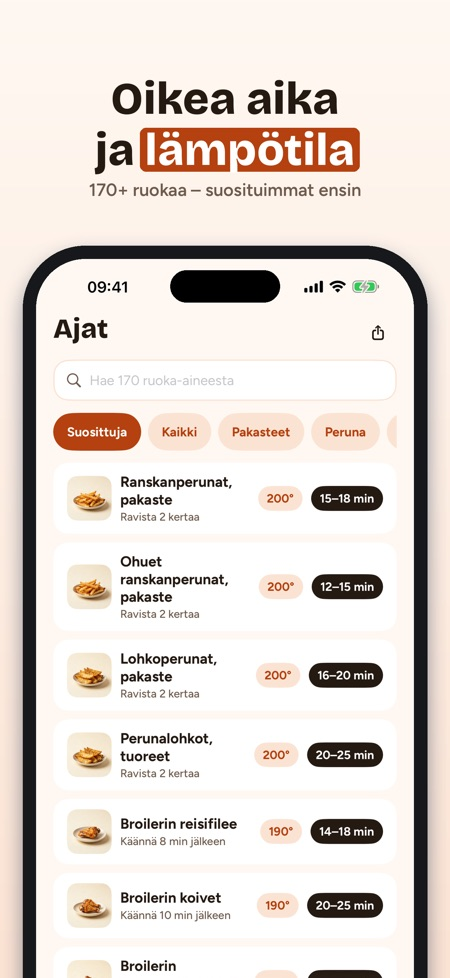
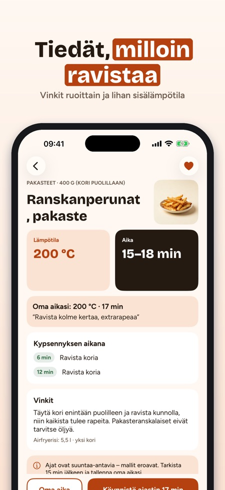
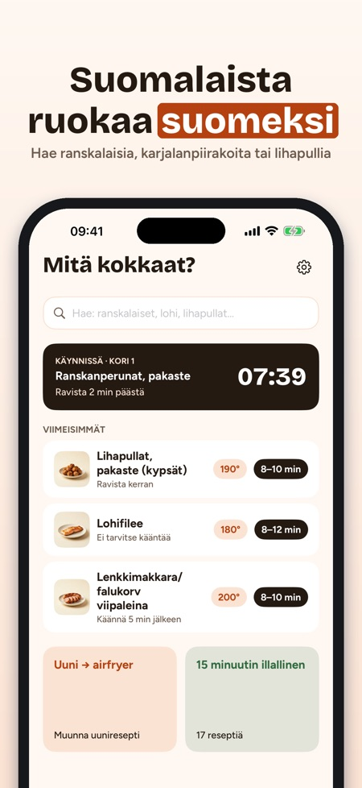

Kypsennysajat ja ajastin. Uusi airfryer joululahjaksi? Krispa kertoo ajan ja lämpötilan 170+ ruoalle – ja lähtölaskenta näkyy lukitusnäytöllä. Uutta: joulukinkun kuorrutus.



Oikea aika ja lämpötila – suomeksi.
Ei mainoksia, ei tiliä – aikataulukko toimii ilman ostoa.
Krispa on airfryer-sovellus suomalaiseen keittiöön: kuinka kauan ja kuinka kuumana 170+ ruoka-ainetta, muunnin uuniresepteille ja ajastimet, jotka muistuttavat ravistamaan koria.
AIKATAULUKKO 170+ RUOKA-AINEELLE
• Pakasteranskalaiset, lihapullat, karjalanpiirakat, lohi, broileri, kasvikset, leivät ja naposteltavat
• Lämpötila, aikaväli ja milloin ravistaa tai kääntää
• Hae suomeksi – ”ranskalaiset”, ”lohi”, ”lihapullat”
• Vinkit määrään, öljyyn ja rapeuteen
UUNI → AIRFRYER
• Syötä uunin lämpötila ja aika (ala- ja ylälämpö tai kiertoilma)
• Saat ehdotuksen airfryerille ja tarkistushetken – nyrkkisääntö, selvästi merkittynä
AJASTIMET MUISTUTTAVAT
• Ilmoitus, kun on aika ravistaa tai kääntää ja kun ruoka on valmis
• Kaksi koria? Krispa käynnistää lyhyemmän ajastimen myöhemmin, jotta molemmat valmistuvat yhtä aikaa
• Jopa neljä ajastinta yhtä aikaa Krispa Plussalla
• Lähtölaskenta näkyy lukitusnäytöllä ja Dynamic Islandissa
68 OMAA RESEPTIÄ
• Arkiruoat, lisukkeet, naposteltavat, leivonta ja jouluruoat
• Muuta annosmäärää – määrät lasketaan uudelleen
• Kokkaustila vaihe vaiheelta, ajastin jokaiselle vaiheelle; näyttö pysyy päällä
• Ostoslista resepteistä osastoittain
OMAT AJAT
• Tallenna suosikit sekä oma aika, lämpötila ja muistiinpano – ”meidän ranskalaiset: 17 min, ravista kolmesti”
RUOKATURVALLISUUS
Broilerille, porsaalle ja jauhelihalle näytetään vähimmäissisälämpötila – Pohjoismaiden ruokavirastojen tiukin suositus. Kala: varmista, että se on kypsä. Ajat ovat suuntaa-antavia – laitteet eroavat, joten tarkista aina ajoissa.
OHJEET
Esilämmitys, leivinpaperi, puhdistus, sijoitus ja turvallisuus, valkoinen savu, kaksi koria ja miksi ruoka ei rapeudu.
KRISPA PLUS
Aikataulukko, muunnin, yksi ajastin ja 10 reseptiä ovat käytössä ilman ostoa. Krispa Plus avaa kaikki 68 reseptiä, jopa neljä ajastinta, kokkaustilan, omat ajat ja ostoslistan. Valitse vuositilaus (uusiutuu automaattisesti, peru milloin tahansa App Storen asetuksista) tai kertaosto. Uudet tilaajat aloittavat vuositilauksen 7 päivän kokeilujaksolla.
Toimii ilman verkkoyhteyttä. Ei tiliä. Krispa ei liity mihinkään airfryer-merkkiin.